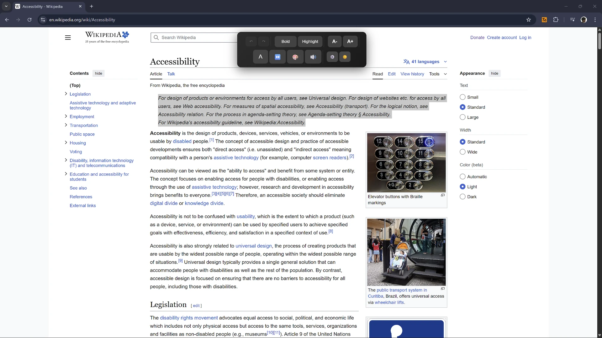

Empowering users to make the web accessible in real-time
Eight ways to improve your reading experience, instantly, on almost any website
Make only the selected words bold without changing the rest of the paragraph. Shift-click to apply it to the whole paragraph.
Highlight exactly the text you selected with a yellow background, or an outline when a background would reduce readability. Shift-click to highlight the paragraph.
Resize the paragraph around your selection from 8px to 50px. Better than browser zoom—targets specific content. Shift-click to resize only the selected text.
Improve readability by switching the paragraph to black or white text based on its background. Shift-click to change only the selected text.
Adjust the paragraph's letter and word spacing for dyslexia-friendly reading. Shift-click to space only the selected text.
Built-in text-to-speech for auditory access. Works instantly without additional software.
Full history tracking with keyboard shortcuts. Experiment freely—mistakes are reversible.
Switch between dark and light toolbar themes, and export or import your preference as JSON.
A quick look at the accessibility toolbar

Select text on almost any webpage to activate the accessibility toolbar
Developed as part of an MSc Computer Engineering dissertation at Solent University
This extension bridges the critical gap between identifying accessibility issues and fixing them. While tools like Lighthouse and axe-core excel at diagnostics, they leave users waiting for developers to implement fixes—a process that can take weeks, months, or may never happen.
Our user-centric approach provides immediate remediation, shifting from a compliance-driven diagnostic model to a user-empowering solution. The extension works across standard web pages (browser-internal pages excluded) with negligible performance impact.
Install the extension and start enhancing web accessibility today
Download the source code from GitHub
Navigate to chrome://extensions/ and toggle on "Developer mode" in the top-right corner
Click "Load unpacked" and select the accessibility-text-enhancer directory
Select text on almost any webpage to see the accessibility toolbar appear. Click features to apply enhancements instantly.